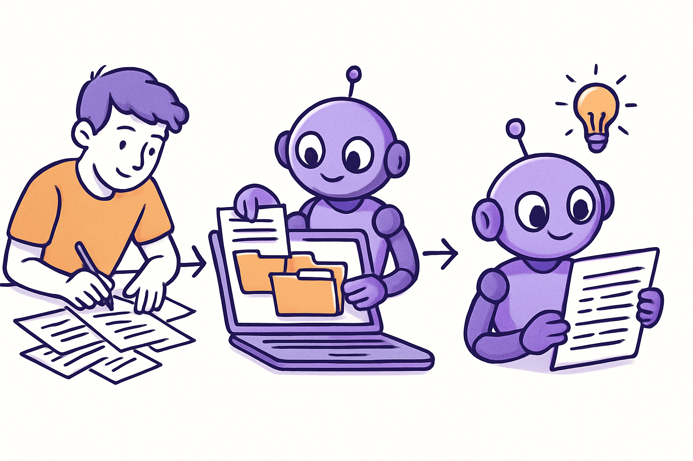
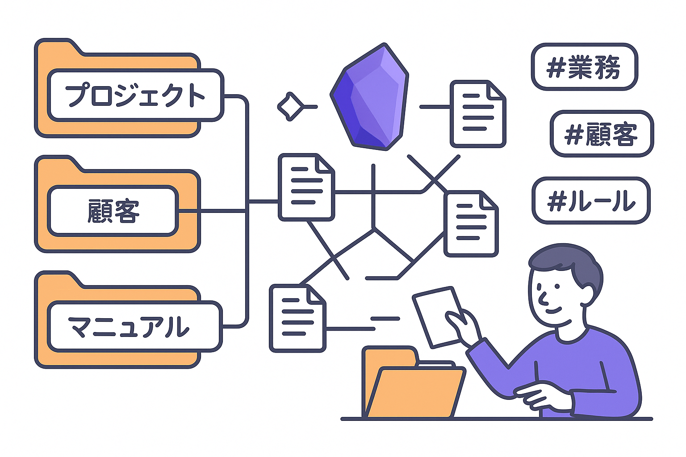
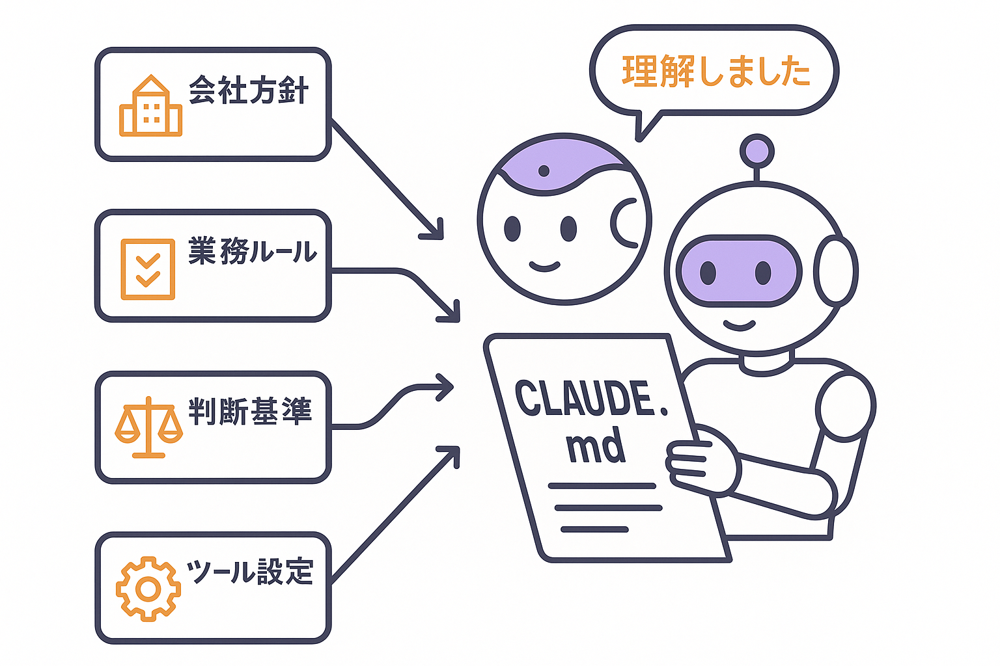
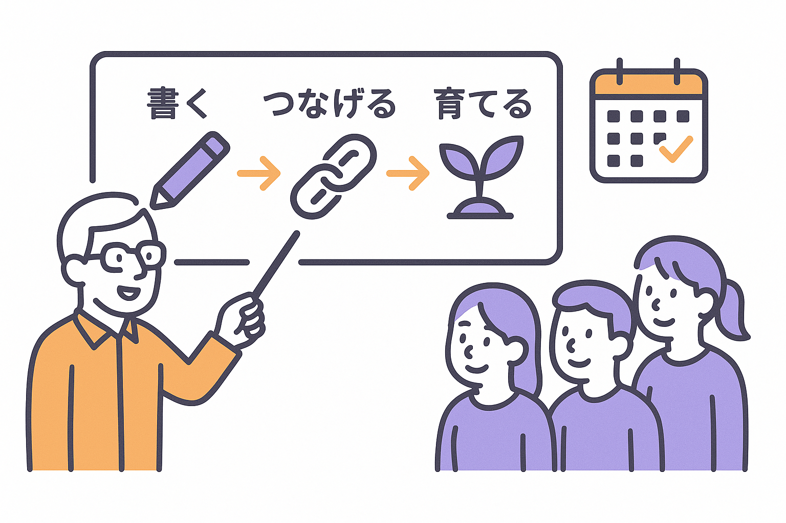

BUSINESS 02
社内に眠るナレッジをObsidianで体系化し、組織の「第2の脳（セカンドブレイン）」を構築。AIが直接活用できるコンテキスト設計で、「人が辞めたら知識も消える」を終わらせます。
— Context is the new code.


会議メモ、顧客対応の記録、過去の施策とその結果。毎日大量に生まれるこれらのナレッジは、個人のメモ帳やチャットの中に埋もれ、属人化し、やがて失われていきます。
PLaiはObsidianを軸に、散在する知識をMarkdownファイルとして構造化し、リンクとタグで自然につなげる「第2の脳（セカンドブレイン）」を構築します。さらにCLAUDE.mdやプロジェクトメモリというコンテキスト形式に変換することで、AIエージェントが直接読み込み、過去の文脈を踏まえた判断ができるようになります。

Obsidianの最大の特徴は、Wikilink（[[リンク]]）でナレッジ同士を自然につなげられること。「顧客Aの対応記録」と「同業界の成功事例」と「使ったツールのマニュアル」が、1クリックでたどれるセカンドブレインになります。
フォルダだけでは見えなかった情報の関連性が、ナレッジグラフビューで一目瞭然に。組織の第2の脳として、必要な情報に最短でたどり着ける仕組みを設計します。

ChatGPTに毎回同じ説明をしていませんか？ PLaiが構築するコンテキストファイルは、AIエージェントが業務開始時に自動で読み込む「第2の脳の引き継ぎ書」のようなもの。会社の方針、過去の意思決定、業務ルール、使っているツール。すべてのナレッジが一つのファイルに集約されています。
PLai自身がこのセカンドブレインの仕組みで事業を運営しており、7つの部門のAI社員がそれぞれの専門知識を持ったコンテキストファイルを参照して業務を遂行しています。
 Obsidian
知識管理
Obsidian
知識管理
 Claude Code
開発・実装
Claude Code
開発・実装
SERVICES

01
お客様の業務内容をヒアリングし、Obsidianで最適なフォルダ構造・タグ体系・リンク設計を行います。「何をどこに書くか」を明確にし、誰でも迷わずナレッジを蓄積・検索できる「第2の脳」を構築します。

02
AIエージェントが業務開始時に読み込むコンテキストファイルを設計・構築します。セカンドブレインに蓄積された会社の判断基準、業務ルール、過去の意思決定をAIが参照できる形に変換。毎回「はじめまして」にならないAI運用を実現します。

03
構築して終わりではなく、ナレッジ運用ルールの策定、社内トレーニング、定着までを伴走サポート。「書くのが面倒」にならない最小限のルール設計で、Obsidianのセカンドブレインにナレッジが自然に蓄積される文化をつくります。
USE CASES

CASE 1
ベテランだけが知っている判断基準、過去の成功パターン、お客様への対応方針。これらがObsidianのセカンドブレインにナレッジとして構造化されていれば、新人でもAIを通じて同じ品質の提案書・対応メール・報告書を作れます。「あの人がいないとできない」がなくなる世界です。

CASE 2
「これ前も言ったよね」「うちのやり方はこうだから」——同じフィードバックを何度も繰り返す必要はもうありません。判断基準や業務ルールがコンテキストファイルとして第2の脳に集約されていれば、AIが上司の代わりにナレッジを参照して方針を伝えてくれます。マネジメントコストが劇的に下がります。

CASE 3
議事録の整理、定型メールの作成、データの転記、報告書のフォーマット調整。こうした「やらなきゃいけないけど価値を生まない仕事」は、ナレッジ基盤を持つAIに任せられます。人間は戦略立案や顧客対応など、本当に頭を使うべき仕事に集中。給与に見合った仕事だけをする組織へ。